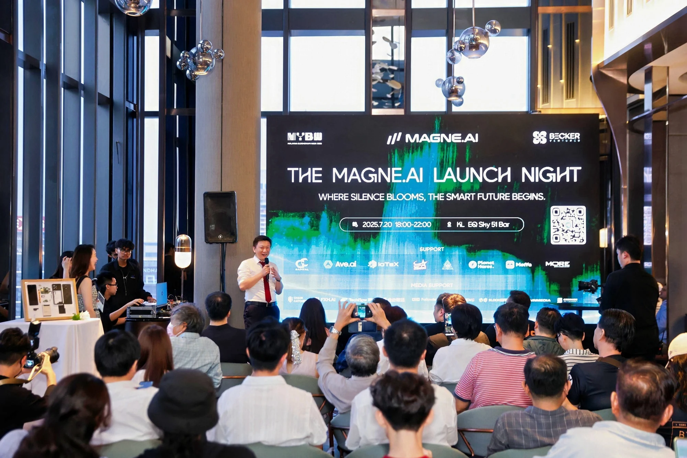
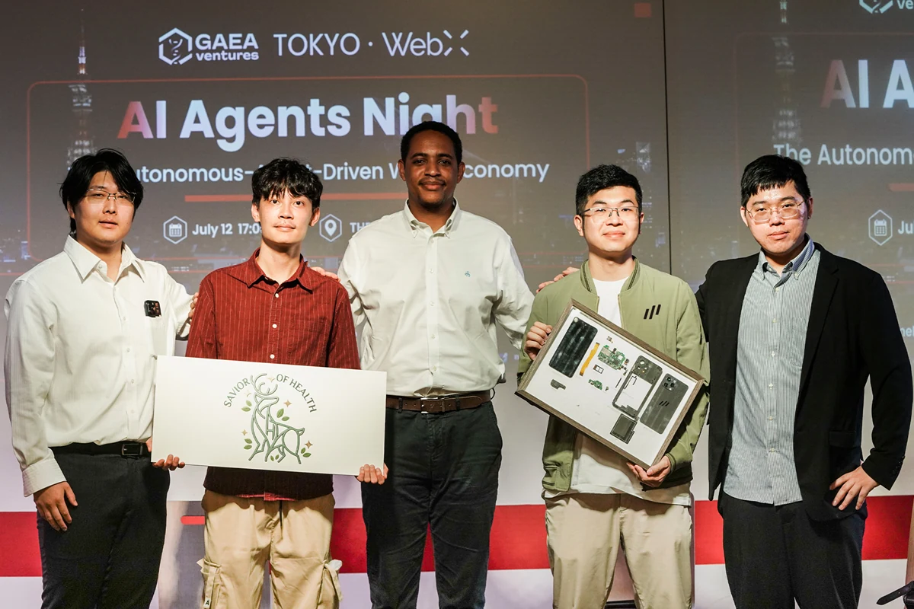
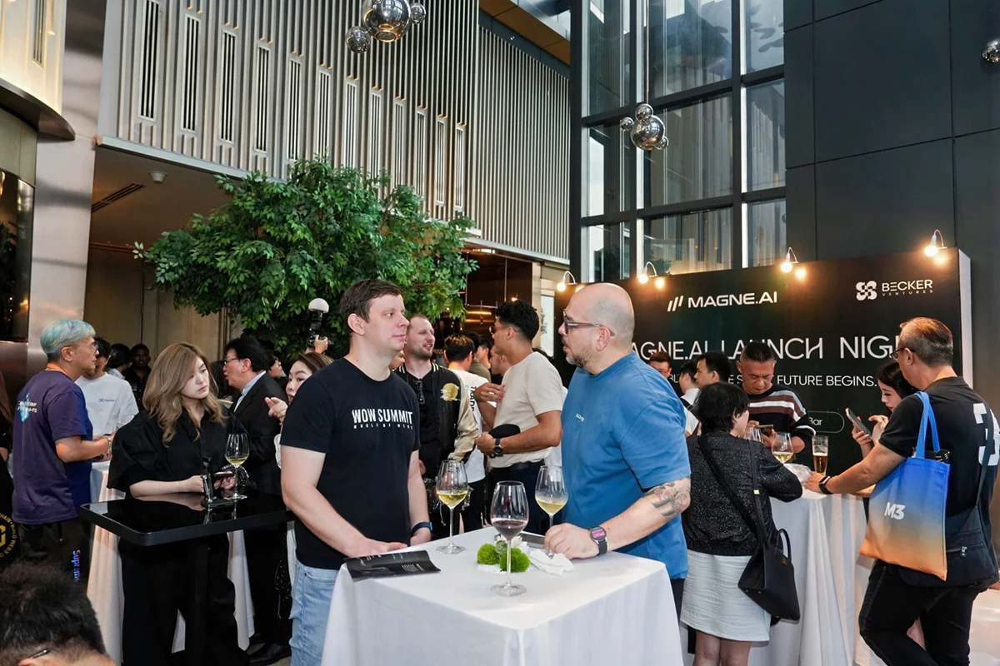
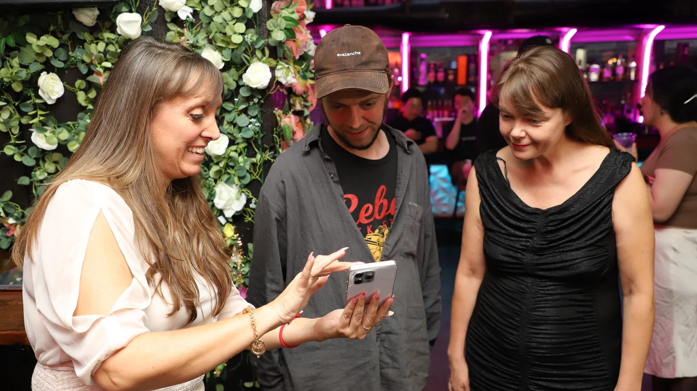
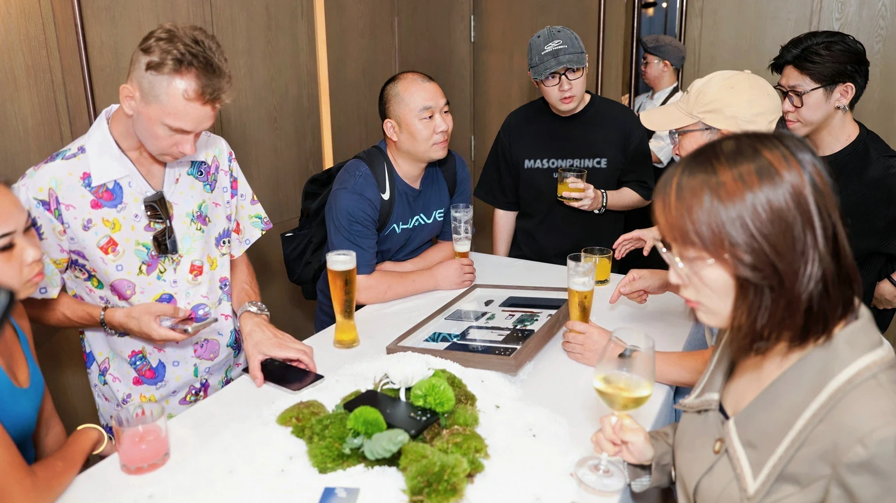
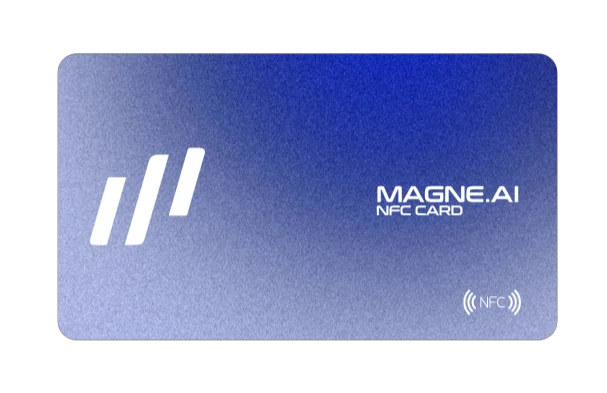
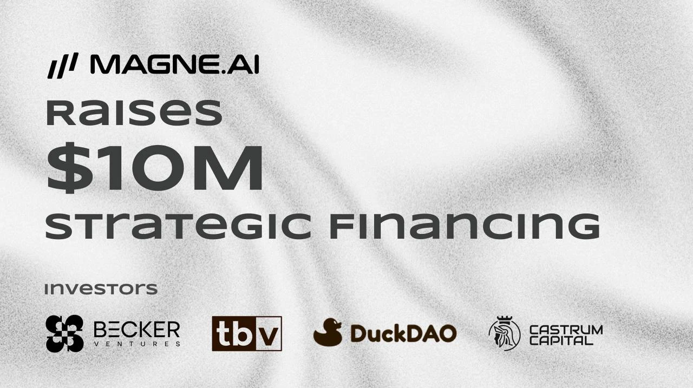
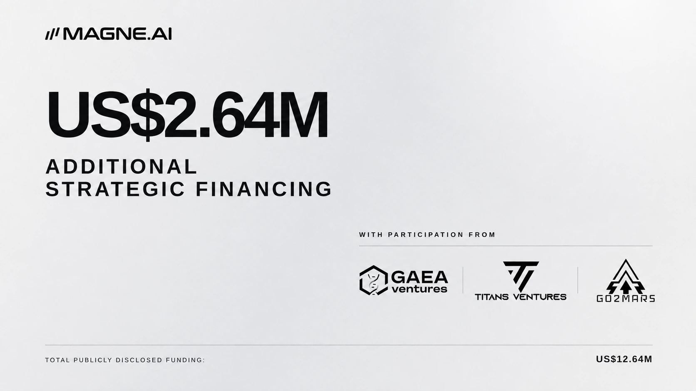

Applications and on-device AI
Everyday experiences happen at the level closest to the user. Comprehension can be done locally without leaving the device first.
AN INTELLIGENT TERMINAL, NOT A SMARTPHONE

When we take apart a mobile phone, we see the chip, lens, battery, and a chain of power that never belongs to the user.
So MAGNE.AI started from scratch with hardware: Let the AI stay on the device, the signature stay on the secure element, and the recovery credentials leave the cloud.
It can still make calls, take photos, and connect to the world. Only this time, the world doesn’t have to have you first.
Reader's Guide · SITE DIRECTORY
THE WITNESSES



"The first time a product leaves the briefing, it doesn't go into the spotlight; it goes into asking questions."
From Kuala Lumpur to Tokyo, MAGNE.AI brings the same proposition to different scenes: the closer artificial intelligence is to life, the less ownership can be just a sentence in the terms of service.


Time Axis · PUBLIC RECORD
The timeline is compiled based on public records and activity information provided by the company; final approval by the MAGNE.AI team is still required before official release.
THE RESPONSE
Everyday experiences happen at the level closest to the user. Comprehension can be done locally without leaving the device first.
Sensitive computing is put into an isolated environment. The system does not ask you to believe, but leaves verifiable boundaries.
The key is guarded by a separate secure element; the recovery credential is a card, not a cloud.

NFC / OFFLINE RECOVERYTHE OBJECT

THE INTELLIGENCE
MAG1 doesn’t lump all AI into one slogan. The system assistant, client-side language capabilities, and image computing each take their own paths and work together when they need to meet.
THREE PATHS / ONE DEVICEAs the default system AI assistant for overseas versions, it integrates side keys for quick access and Google cloud capabilities.
DEFAULT SYSTEM ASSISTANTLocal Qwen2.5 1.5B cooperates with end-side speech recognition and synthesis to undertake translation and speech workflow.
LOCAL TRANSLATIONA discrete NPU provides hardware acceleration for on-device inference; imaging AI is handled by a dedicated ISP and Vision path.
1.2GHz · 10 TOPS INT8THE NETWORK
The starting point for keys, on-device AI, trusted execution and user behavior.
Device identity, public verification and ownership records.
Application and ecological layer based on OP Stack.
“The purpose is not to put everything on the chain.Explore MAGNE Network ↗
It gives a place for things that need to be proven. "
THE MOMENT


TOTAL PUBLICLY DISCLOSED FUNDING
The first round of strategic financing of US$10M was participated by Becker Ventures, TBV, DuckDAO and Castrum Capital; additional US$2.64M of financing was participated by Gaea Ventures, Titans Ventures and Go2Mars.
Numbers do not vouch for the product. It just gives the next round of validation time to happen.
THE OFFICE
Cooperation, channels, corporate procurement and market. It is more important to state your needs clearly than to state your promises beautifully.
We stick to the shipping schedule.info@magne.ai ↗
Not adhering to marketing rhetoric.
Devices, accounts, orders and after-sales. Issues should be numbered, tracked, and truly closed.
SLA has time,Go to Support Center ↗
Responses have names.
Interviews, materials, brand assets and announcements. The data is on the chain, the story is here, and the commitment is in the public record.
Stories can be told,Open media kit ↗
Facts must be checked.
true intelligence
doesn't decide everything for you.